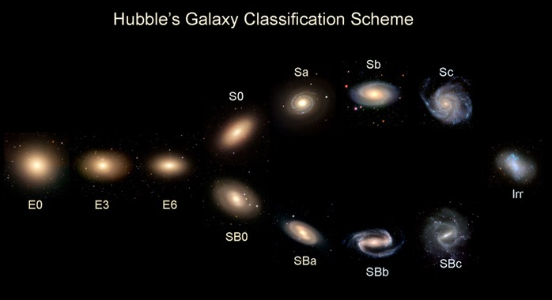

องก์ 2 · Scene 9 · RISING ACTION 2 (หัวใจ EP02)
Tuning Fork Lab
K1 · จำแนก
P1 · สังเกต · P2 · ทำนาย
A1 · ทีม · A2 · ปกป้องความคิด
Dr.Hubble วาง 10 ภาพกาแล็กซี บนโต๊ะ · "เรียงจากรูปไข่ไปกังหัน · ทำ 3 เฟส"

Hubble Tuning Fork diagram (1926)
① BEFORE · ทำนาย
② ACTIVITY · เรียง
③ AFTER · Debate
ก่อนเรียง · ทำนาย
1. ซ้ายสุดควรเป็นกาแล็กซีแบบ:
2. สีของกาแล็กซีรูปไข่ส่วนใหญ่:
3. การสร้างดาวใหม่เกิดในแบบไหนมากกว่า:
วางการ์ดลงในผัง Tuning Fork ให้ตรงตำแหน่ง
💡 Stem (รูปไข่): E0 → E5 → E7 · แขนบน (กังหัน): Sa → Sb → Sc · แขนล่าง (มีคาน): SBa → SBb → SBc · Irr แยกทางขวา
◀ STEM · E
S (กังหัน) ▶
SB (มีคาน) ▶
Irr
E0
E5
E7
Sa
Sb
Sc
SBa
SBb
SBc
Irr
🃏 กองการ์ด · ลากไปวางในผัง (ดับเบิลคลิกการ์ดในผังเพื่อดึงกลับ)
③ ปกป้องความคิด · เขียนบันทึก
ไม่ต้องยืนนำเสนอ · เขียนสั้น ๆ เป็นบันทึกให้ตัวเอง/ครู · ช่องละ 1-2 ประโยค
เลือก 1 ตำแหน่ง
E0
E5
E7
Sa
Sb
Sc
SBa
SBb
SBc
Irr
เพราะสังเกตเห็นอะไร? (เลือก 1+ ข้อ)
รูปร่างกลม · ไม่มีแขน
รูปร่างรียาว
มีแขนกังหัน · ไม่มีคาน
มีคานตรงกลาง
ไม่มีรูปแบบชัดเจน
อยู่ใน sequence ของ stem (กลม→รี)
เรียงจากแขนแน่นไปเปิด
bulge ใจกลางเปลี่ยนขนาด
📝 เพิ่มเหตุผลของตัวเอง (ไม่บังคับ)
จุดยืนของคุณ?
😬
เห็นด้วย
⚔️
ไม่เห็นด้วย
🤔
ไม่แน่ใจ
เหตุผลที่สนับสนุน? (เลือก 1+ ข้อ)
Sa มีแขน · ไม่มีคาน · ต่าง SBa
Sa อยู่ตระกูล S เหมือน Sb/Sc
SBa มีคานชัดเจน · ต่าง Sa
แขนบน = S · แขนล่าง = SB
Hubble เรียงตาม family ไม่ใช่ความรี
ทั้ง Sa และ SBa มีแขน · จริง ๆ คล้ายกัน
ต่างกันแค่ "มี/ไม่มีคาน"
📝 เพิ่มเหตุผลของตัวเอง (ไม่บังคับ)
💡 ครูดู Teacher Panel เห็นทั้ง chip ที่เลือก + ข้อความเพิ่มเติม
🎙️ Teacher Cue · P09 · บทบาท: คุม debate · ไม่เฉลย
Phase 1 (3 นาที): ทำนายก่อน · "ทำไมคิดแบบนั้น"
Phase 2 (8 นาที): เรียง · ถามนำ "อะไรเปลี่ยนเมื่อเลื่อนจากซ้ายไปขวา"
Phase 3 (3 นาที): Self-Defense Journal · เขียน 2 ข้อสั้น ๆ · ครูอ่านทีหลังใน Teacher Panel
⛔ ห้ามพูด: "Hubble sequence" (รอ P10)
Item: ทำนายถูก 2/3 → 🛡️ Shield · ถูกทั้ง 3 → Shield + 🔍 Lens reveal (ถ้ามี Lens จาก P04)